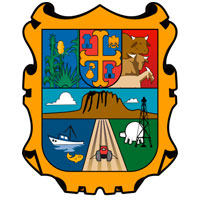

La principal actividad económica es la industria manufacturera y como actividades menores se ubican el sector de servicios y especialmente en el comercio. Por los 15 cruces fronterizos entre Estados Unidos de América y Tamaulipas y sus dos puertos marítimos, (Tampico, Altamira), se mueve el 30 por ciento del comercio internacional de México que supera los 280 mil millones de dólares anuales en ambos sentidos, la mayor actividad de importación y exportación ocurre en la frontera entre Nuevo Laredo, Tamaulipas y Laredo, Texas, donde pasa el 28 por ciento del tráfico comercial del Tratado de Libre Comercio para América del Norte (TLCAN). A los servicios sigue la actividad en la planta manufacturera, especialmente en la Industria maquiladora de Exportación en las ciudades fronterizas, y la petroquímica en el Puerto Industrial de Altamira, Ciudad Madero y Tampico. La industria manufacturera en esta entidad reporta 8,143 unidades económicas, entre las que se cuentan: plantas de envasado de refrescos y aguas purificadas, industrias fabricantes del sistema eléctrico automotriz y otras partes del mismo; también aparecen diseminados en barrios y localidades: tortillerías y panaderías. En el estado de Tamaulipas operaron 98,610 unidades económicas durante 1998 y sobresalen por su mayor número los establecimientos comerciales con más 47.200, de ellos la mayoría realiza sus actividades en el comercio al por menor. Los dedicados a prestar servicios privados son 34,727 (35.2%) y de estos destacan los restaurantes, fondas, talleres de reparación especializada automotriz y agencias aduanales. La gastronomía de esta región es rica y variada, en la que destacan productos como el maíz, carnes donde hay que mencionar al famoso cabrito, la carne seca, cerdo, pollo y venado, y los pescados y mariscos donde se encuentran la negrilla, el róbalo o el huachinango. Entre sus platos típicos hay que destacar el cabrito al pastor, cabrito al horno, parrilladas, gorditas rellenas, tamales de cerdo, asado de puerco, carne asada a la tampiqueña, carne seca con huevo, tortas de la barda, migadas, zacahuil. Además se elaboran excelentes platos con pescados y mariscos como los cebiches, sopas de mariscos, las jaibas rellenas, salpicón de jaiba, camarones elaborados de muy diferentes maneras como por ejemplo escabeche de camarón o camarones en su jugo, además de los pescados anteriormente nombrados, la negrilla, robalo y huachinango. En cuanto a los postres destacar el pemole, que son rosquillas de harina de maíz, gorditas endulzadas con piloncillo, el camote con piña, las frutas cristalizadas y la cocada con piña y nuez. Bebidas típicas de esta región son el agua de jobito, de huapilla y el mezcal. El estado de Tamaulipas es uno de los más afectados por la violencia en el país, principalmente causada por el crimen organizado. En febrero de 2010 se provoca un conflicto armado entre el Cártel del Golfo y Los Zetas, dando como resultado que numerosas ciudades fronterizas se convirtieran en "pueblos fantasma", tal es el caso de la franja fronteriza conocida como "La Frontera Chica" conformada por las ciudades de Miguel Alemán, Mier, Camargo y Nueva Ciudad Guerrero. En noviembre de 2010 el ejército mexicano, junto con la Policía Federal y la Marina, ponen en marcha un operativo en torno al norte del estado de Tamaulipas, permitiendo que cientos de familias regresaran a sus hogares después de meses de exilio en otros estados, principalmente en municipios como Mier, en donde se da el regreso de alrededor de 4000 personas. Según el INEGI, en 2012 Tamaulipas contenía 9 municipios con una tasa de homicidios superior a los 100 por cada 100,000 habitantes: Cruillas (106), San Fernando (175), Llera (159), Mier (156), Güémez (141), Hidalgo (135), Nuevo Laredo (134), González (109) y Soto la Marina (100). Por otro lado, los municipios que en 2012 habían tenido más homicidios dolosos fueron Nuevo Laredo (536 homicidios), Victoria (165) y San Fernando (102).
